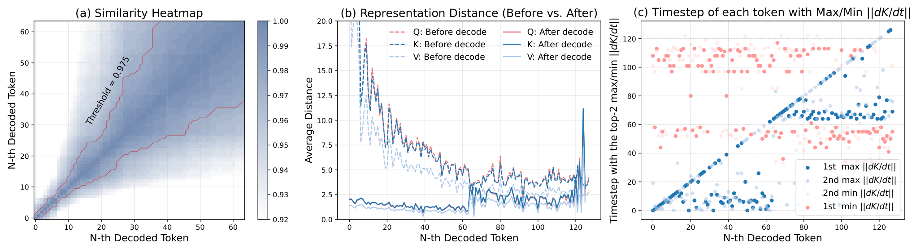
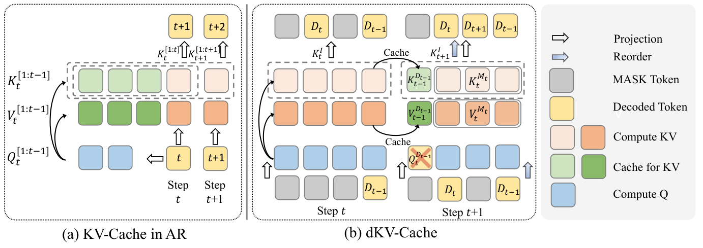
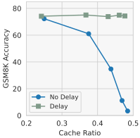
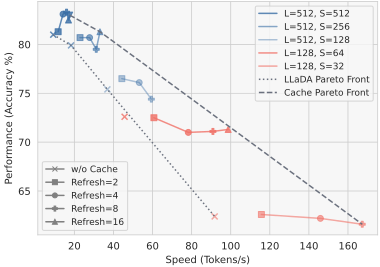
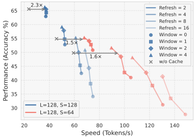
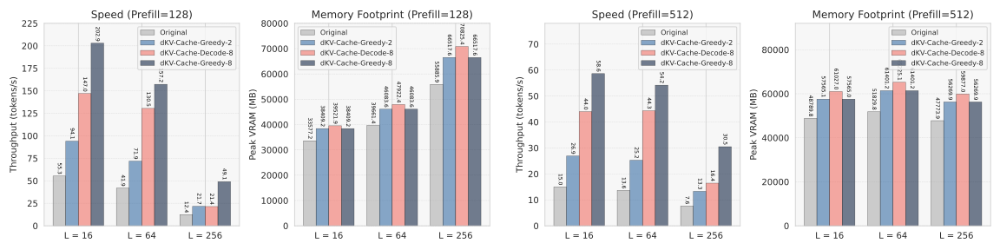
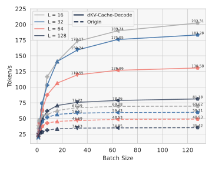
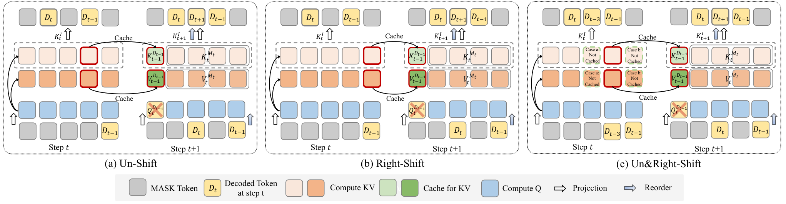

dKV-Cache：扩散语言模型的 KV 缓存
dKV-Cache: The Cache for Diffusion Language Models
GitHub star 为 2026-10-20 的快照。阅读状态、进度与收藏只保存在你的浏览器里。
逐节精读
这部分按论文的章节顺序，用本站自己的话把整篇论文从头讲一遍。读懂某个概念需要的背景知识，会在第一次用到它之前单独讲清楚（青色框）。每个结论都尽量说出“因为什么、所以什么”。论文以 CC BY 4.0 许可发布，所以原文的七张图都直接放在讲到它的地方，并说明这张图怎么看；原图没画到的东西（一个位置在各步里的 key/value 从哪来、每一步重算哪些位置、刷新节奏、和 Fast-dLLM 的对照、表格里的数字）用本站自己画的示意图和图表补上。标“推算”的数字是本站根据论文数据或官方代码算出来的，不是论文原话。本页依据 arXiv v1（2025-05-21）；NeurIPS 2025 正式版的正文与 v1 基本相同，只有个别措辞改动，另加了致谢和论文清单。每节末尾有英文原文的链接。
0 导读：这篇论文解决什么问题
扩散语言模型（如 LLaDA、Dream）生成文字的方式和 GPT 一类的自回归模型不同。它先在答案区放一整行 [MASK]，然后一轮一轮地把其中一些位置换成真正的词，直到全部填满。因为一轮可以同时填好几个位置，这种方式听起来应该比“一次只写一个词”的自回归模型快。可实际上，开源的扩散语言模型反而慢得多。原因之一是它们用不上自回归模型最重要的提速工具 KV 缓存：自回归模型把已经算过的 key/value 存起来，每一步只算新来的那一个词；扩散语言模型用双向注意力，任何一个位置被填上新词，其他所有位置的 key/value 都会跟着变，于是每一步都只能把“提示 + 整个答案区”从头算一遍。
这篇论文的出发点是一个实验观察：key/value 虽然每一步都在变，但变得并不均匀。一个 token 被定稿（从 [MASK] 换成真正的词）之后，它的 key/value 就相当稳定；还没定稿的位置则一直在明显波动；变化最大的，恰好是定稿前后的那一步。作者据此设计了 dKV-Cache（delayed KV-Cache，延迟 KV 缓存）：只缓存已经定稿的 token，并且比定稿再晚一步才存；每隔若干步把缓存整个丢掉、重算一次。它不需要重新训练，直接套在现有的 LLaDA 和 Dream 上。论文报告 2–10 倍的加速，主表里的准确率基本不掉，个别长输出任务还涨了。
论文给了几个版本。dKV-Cache-Decode 是主力，几乎无损，但每一步仍要重算所有还没定稿的位置，总复杂度仍是 \(O(L^3)\)。dKV-Cache-Greedy 更激进，每一步只重算两三个位置加一个小窗口，复杂度降到 \(O(L^2)\)，代价是必须事先定好解码顺序，准确率掉得更多。另外还有只缓存提示的 Prefill 版和两者结合的 PD 版。论文里“10 倍”这个数字，来自 Prefill 版在“长提示、短输出”任务上的表现。
读完这部分，你应该能回答这几个问题：
- 自回归模型的 KV 缓存凭什么成立？扩散语言模型缺了它的哪两个前提？
- 已定稿和未定稿 token 的 key/value 分别怎么变？变化最大的为什么是定稿那一步？
- 为什么一定要“晚一步”再缓存？不晚这一步会发生什么？
- Decode、Prefill、PD、Greedy 四个版本各缓存什么、每步还要重算什么？
- 它和一周后出现的 Fast-dLLM 的近似缓存有什么不同？
- 2 倍、10 倍这些数字是在什么硬件、批大小、提示长度和生成长度下测的，和谁比的？
1 引言：号称能并行的扩散模型，为什么反而比自回归慢
Transformer 的每一层里，每个位置都会算出三个向量：query（“我想找什么信息”）、key（“我能提供什么信息”的标签）和 value（真正携带的内容）。注意力就是拿某个位置的 query 去和别的位置的 key 比相似度，再按相似度把它们的 value 加权平均。
自回归模型用因果掩码：第 \(i\) 个位置只能看第 1 到第 \(i\) 个位置，看不到后面。这带来一个重要的性质：后面新写出来的词，不会改变前面任何位置在任何一层的 key/value。于是推理时可以把前面所有位置的 key/value 存下来（这就是 KV 缓存），每生成一个新词，只需要为这一个新位置算 query、key、value，用它的 query 去和缓存里所有的 key 做注意力，再把它自己的 key/value 追加进缓存。KV 缓存为什么占显存、推理系统怎样管理它，见本站的 vLLM 精读 §2.2。
KV 缓存成立靠两个前提，后面会反复用到：第一，旧位置的 key/value 不会变（因果掩码保证）；第二，下一步要算的是哪个位置事先就知道（永远是最右边的新位置）。
先算一笔复杂度的账。设答案长 \(L\)，为了简单先不算提示。自回归模型写第 \(t\) 个词时，只有 1 个 query 去和 \(t\) 个 key 配对，写完整段一共约 \(L^2/2\) 次配对，所以注意力的总代价是 \(O(L^2)\)。扩散语言模型默认用 \(L\) 步写完 \(L\) 个词（每步定稿 1 个），每一步都是 \(L\) 个 query 和 \(L\) 个 key 两两配对，即 \(L^2\) 次；\(L\) 步合计 \(L^3\) 次，所以是 \(O(L^3)\)。以 \(L=256\) 为例，自回归约 3.3 万次配对，扩散约 1,678 万次，相差约 512 倍（推算）。如果不数注意力配对、只数“送进网络的位置数”（这决定了前馈网络等其余部分的计算量），自回归一共 256 个，扩散一共 \(256\times256=65{,}536\) 个，相差 256 倍（推算）。
论文认为，扩散语言模型实际跑得慢，主要因为两件事：一是和 KV 缓存不兼容，每一步都要整段重算；二是去噪步数多，生成 \(L\) 个 token 通常要走 \(L\) 步。本文只处理第一件事。第二件事（每步多定稿几个 token）是 Fast-dLLM 的并行解码等工作的方向，和本文的缓存是正交的，可以叠加。
为什么不能直接把 KV 缓存搬过来？作者指出了两个原因，恰好对应上面那两个前提：
- 旧位置的 key/value 会变。扩散语言模型用双向注意力，每个位置都能看见整段序列。某一步把某个 [MASK] 换成了真正的词，所有位置从第二层开始的输入都混进了这个新词的信息，它们的 key/value 也就跟着变了。所以“第 \(m\) 步算出来的旧位置 key/value”和“第 \(n\) 步算出来的”一般不相等，第一个前提不成立。
- 下一个要算的位置事先不知道。扩散语言模型不按从左到右的顺序写。每一步先把整段送进网络，得到每个 [MASK] 位置的预测和置信度，再决定这一步定稿哪几个位置。也就是说，要等这一步的前向算完，才知道哪些位置被定稿了，下一步又该更新哪里。第二个前提也不成立。
作者的核心判断是：双向注意力下的 key/value 并非“根本不能复用”，而是需要延迟地、有条件地复用。实验发现，一个 token 的 key/value 怎么变，很大程度上取决于它是否已经定稿。由此有了两层“延迟”：第一层，只缓存已经定稿的 token，而不是像自回归模型那样一个词输入进来就缓存；第二层，在定稿之后再推迟一步才缓存。作者说这多出来的一步既显著提高了准确率，也减少了存储 key/value 的开销（原因见第 12 节附录 A 的实现细节）。在此之上，作者还提出了更激进的 Greedy 版：每一步只重算“刚定稿的 token、这一步要定稿的 token、以及一个小窗口”，把复杂度从 \(O(L^3)\) 降到 \(O(L^2)\)。
论文声称的结果是：在 7B 级别的 LLaDA 和 Dream 上，覆盖语言理解、数学和代码等任务，加速 2–10 倍，准确率只有轻微或可以忽略的下降，而且对提示长度、输出长度和步数的变化都比较稳健。论文列出的贡献有三条：提出扩散语言模型的第一个 KV 缓存机制（延迟缓存）；给出 Decode 和 Greedy 两个实用版本；在多个模型和任务上验证 2–10 倍的加速。
- \(O(L^3)\) 对 \(O(L^2)\) 只数了注意力的配对数，而且假设扩散模型走 \(L\) 步。真实速度还取决于显存带宽、批大小、实现方式，第 9、10 节会看到，这些因素可以让同一个方法的加速倍数从“比原版还慢”变到 3 倍以上。
- 引言说本文“不依赖自回归或半自回归结构”，指的是模型本身不需要像 块扩散（BD3-LM） 那样改成块间因果再重新训练。但 LLaDA 的实验里，采样器仍然是分块从左到右写（块长 16–64，见第 7 节），缓存也在每块开头重置。
2 相关工作：扩散语言模型与生成模型里的“缓存”
扩散语言模型这条线。D3PM 和多项式扩散把扩散模型推广到离散数据，定义了“腐蚀”和“去噪”用的转移矩阵（见 D3PM 精读）；Diffusion-LM 在连续的词向量空间里做扩散（见 Diffusion-LM 精读），SSD-LM 在词表上的单纯形里做扩散，质量追上了 GPT-2。离散路线上，DiffusionBERT 用 BERT 学习吸收态扩散的反向过程；SEDD 提出 score entropy 损失；MDLM 证明简单的掩码扩散就能和以前各种扩散语言模型打平；块扩散 把它改成块间自回归，从而能生成任意长度；LLaDA 和 DiffuLLaMA 把掩码扩散做到了数十亿参数，表现接近同级别的自回归模型。本文用的两个模型，LLaDA 是从零训练的，Dream 是从自回归模型初始化来的。
图像扩散模型要走几十到上千步去噪，每一步都要跑一遍很大的网络。人们发现，相邻两步网络内部的高层特征非常相似，于是可以把某一步算出的特征存下来，接下来几步直接复用，只重算一小部分。本文第一作者此前的 DeepCache（CVPR 2024）就是这样：复用 U-Net 深层的高层特征，每一步只重新算浅层；Learning-to-Cache（NeurIPS 2024）在扩散 Transformer 上学习哪些层可以跳过。这类方法的共同点是用“相邻步的表示很像”换计算量，结果是近似的，但质量损失通常很小。dKV-Cache 可以看成把同一种思路搬到扩散语言模型的 key/value 上。
缓存这条线。KV 缓存最早随 Transformer 出现，后来成为基础技术，又衍生出一批压缩 KV 缓存显存的方法（自适应丢弃、量化等）。在图像扩散模型里，人们利用高层特征、注意力图在时间上的相似性做缓存；三维生成和视频生成里也有类似工作。但扩散语言模型里的缓存，尤其是 KV 缓存，研究得很少。作者点名了两项相关工作：BD3-LM 在半自回归的块扩散模型里用了 KV 缓存，但这要在训练时就把缓存考虑进去（训练时前向计算量翻倍），形式上也仍然是自回归的；MDLM 也提到缓存，但只在一个很严格的条件下成立：某一步没有任何新 token 被定稿时，画布原样不变，直接复用上一步的输出。
3 预备知识：掩码扩散怎样一步步生成，KV 缓存写成公式是什么样
把一句话看成 \(L\) 个 token，每个 token 是词表上的一个类别。“加噪”就是随机把一些 token 换成一个特殊的 [MASK]；时间越往后，被换掉的越多，到最后全是 [MASK]。模型要学的是反过来：看着一段部分被遮住的序列，猜出每个被遮住的位置原来是什么词。这一类模型的训练目标和生成方法，在 MDLM 精读 和 LLaDA 精读 §2.1 里有详细推导，这里只交代本文用到的记号。
论文把去噪过程离散成 \(T\) 步，用 \(c(t)=t/T\) 表示第 \(t\) 步对应的连续时间（\(t=0\) 是干净数据，\(t=T\) 是全遮住）。前向加噪可以写成
这里 \(\mathbf x_0\) 是原句（每个 token 是一个 one-hot 向量），\(\mathbf U_i\) 是第 \(i\) 步的转移矩阵，它的第 \((j,k)\) 个元素表示“这一步 token \(j\) 变成 token \(k\) 的概率”，\(\mathrm{Cat}\) 表示按给定概率抽一个类别。掩码扩散用的是“吸收态”转移：每一步，一个还没被遮住的 token 以概率 \(\beta_t\) 变成 [MASK]，否则保持不变；一旦变成 [MASK] 就一直是 [MASK]。累积下来，到第 \(t\) 步时一个 token 仍保持原样的概率是 \(\bar\alpha_t=\prod_{i=1}^{t}(1-\beta_i)\)，被遮住的概率是 \(1-\bar\alpha_t\)。论文取的调度让 \(\bar\alpha_t\) 随 \(t\) 线性下降，到 \(t=T\) 时为 0。反向过程由网络 \(p_\theta\) 学习：给定第 \(t\) 步的序列，网络直接预测干净的 \(\mathbf x_0\)，再由此得到第 \(t-1\) 步的序列。
生成是怎么进行的。从答案区全是 [MASK] 开始，每一步做两件事：先把整段送进网络，得到每个 [MASK] 位置“最可能是哪个词”的预测；再决定这一步把哪几个位置真正换成预测出的词，其余位置重新遮回 [MASK]（称为重掩码）。被换成真词的位置以后就不再改动。本页把这一步称为“定稿”（论文叫 decoded），还没定稿的位置称为“未定稿”或“掩码位置”。选哪几个位置定稿有几种常见策略：随机选（D3PM 的做法）；选模型最有把握的，即预测概率最高的（MaskGIT 的做法，LLaDA 叫 low-confidence remasking，意思是把没把握的重新遮回去）；选前两名概率差距最大的（见 Train for the Worst, Plan for the Best 精读）。
LLaDA 的指令模型在实验里常用半自回归的写法：把长 \(L\) 的答案区切成若干块（块长 \(B\)），从左到右一块一块地写，每块内部用扩散的方式按置信度定稿；只有当前块的位置可以被定稿，后面块的 [MASK] 仍在序列里、参与注意力。总步数 \(T\) 平均分给各块，每步定稿 \(L/T\) 个 token。本文主表几乎都取 \(T=L\)，也就是每步只定稿 1 个 token，这是扩散模型质量最好、也最慢的设置。细节见 LLaDA 精读 §2.4。
自回归的 KV 缓存写成公式。论文先把自回归模型的 KV 缓存写出来，作为后面推广的起点。每一层用投影矩阵 \(\mathbf W_Q,\mathbf W_K,\mathbf W_V\) 把隐藏状态变成 query、key、value。第 \(t\) 步只为第 \(t\) 个位置算隐藏状态 \(\mathbf h_t^{[t]}\)，然后
记号的读法：上标方括号是位置，\([1:t]\) 表示第 1 到第 \(t\) 个位置；下标是在第几步算出来的。所以 \(\mathbf K_{t-1}^{[1:t-1]}\) 是“上一步就已经存在缓存里的前 \(t-1\) 个位置的 key”，\(\mathbf K_t^{[t]}\) 是“这一步新算的第 \(t\) 个位置的 key”，两者拼起来就是这一步注意力要用的全部 key。\(\mathbf z_t\) 是这个注意力头在第 \(t\) 步的输出，\(\sqrt{d_k}\) 是常规的缩放。作者特别说明，模型用不用分组查询注意力（GQA，多个 query 头共享一组 key/value 头）不影响这套方法。
4 为什么 KV 缓存不能直接用，key/value 实际怎么变
4.1 两个障碍，说得更具体一些
KV 缓存有效，靠的是两件事：复用以前算好的 key/value，以及每一步只为当前要写的那个 token 做计算。扩散语言模型两件事都做不到。
第一，key/value 随步数变化。在自回归模型里，前 \(t-1\) 个位置的 key \(\mathbf K_m^{[1:t-1]}\) 在第 \(t-1\) 步及以后的每一步 \(m\) 都是同一组值，因为因果掩码让它们看不到后面的词。在扩散语言模型里，第 \(m\) 步和第 \(n\) 步看到的序列不一样（中间有别的位置被定稿了），所以只要 \(m\ne n\)，就有 \(\mathbf K_m^{[1:t-1]}\ne\mathbf K_n^{[1:t-1]}\)，value 也一样。从网络内部看：第一层里，一个位置的 key/value 只由它自己的 token 和位置决定；从第二层起，它的输入已经混进了它能看到的所有位置的信息，而双向注意力下它能看到整段，所以别处任何一个 [MASK] 被换成真词，它的 key/value 都会跟着变（Fast-dLLM 精读 §3.1 有一张示意图专门画了这件事）。
第二，解码顺序不固定。扩散模型每一步根据当前的预测概率动态决定填哪些位置。被定稿的位置要等这一步前向算完才揭晓，下一步要更新的位置也可能在序列的任何地方。于是没法事先确定这一步该为哪个位置 \(i\) 算隐藏状态 \(\mathbf h^{[i]}\) 和 \(\mathbf Q^{[i]},\mathbf K^{[i]},\mathbf V^{[i]}\)。
所以严格意义上的复用是不可能的。真正的问题变成：近似地复用，误差有多大？这要看 key/value 实际变了多少。
4.2 三个观察（原文图 2）
作者在 LLaDA 上生成长 \(L=128\)、步数 \(T=128\)（每步定稿 1 个 token）、块长 64（共两块）的序列，记录每个 token 在每一步、每一层的 query、key、value，然后做了三种统计：(a) 把各步的 key 两两比较，画成相似度热图；(b) 对每个 token，算相邻两步 \(t\) 和 \(t+1\) 之间表示的欧氏距离，并把“这个 token 定稿之前的那些步”和“定稿之后的那些步”分开取平均；(c) 对每个 token，找出 key 变化量 \(\lVert d\mathbf K/dt\rVert\) 最大的两步和最小的两步各发生在哪一步。

作者从图中读出三个观察：
- 整体很相似。虽然每一步都在变，但不同步之间的 key、value 始终高度相似（图 2a）。这说明“拿旧值近似新值”是有希望的。
- 定稿之后就稳定了。一个 token 一旦定稿，它在之后各步里的表示就相对稳定；还是 [MASK] 的位置则持续明显波动（图 2b 中虚线远高于实线）。这说明“缓存什么”应该按是否定稿来区分。
- 定稿那一步变化最大。每个 token 的 key/value 变化最大的时刻，是它被定稿的那一步，其次是去噪过程的早期（图 2c 的对角线）。这说明“什么时候缓存”很关键：定稿那一刻的值是最不可靠的。
为什么偏偏是定稿那一步？论文只陈述了这个现象，本站补一个机制上的解释。设第 \(t\) 步结束时位置 \(p\) 被选中定稿，写入了词“48”。注意第 \(t\) 步的前向计算是在做出这个决定之前完成的，那一次前向里位置 \(p\) 的输入仍然是 [MASK]。到了第 \(t+1\) 步，\(p\) 的输入才第一次从 [MASK] 的嵌入变成“48”的嵌入。第一层里一个位置的 key/value 只由它自己的输入决定，所以这时 \(p\) 的 key/value 几乎是整个换掉；深层里 \(p\) 自己的内容也是它隐藏状态的主要成分，同样变化很大。相比之下，别的位置只是通过注意力间接地“多看到一个词”，在几十上百个位置里只占一小份，变化自然小得多。等 \(p\) 的输入固定下来之后，它只受别处陆续定稿的间接影响，于是趋于稳定。早期变化大的原因也类似：最开始画布几乎全是 [MASK]，最初定稿的几个词给整段带来的新信息最多。
- 图 2 只是一个设置（LLaDA，\(L=T=128\)，块长 64）下的测量，距离也没有按向量的长度归一化，不同层、不同模型的数值不能直接比较。
- “相似度 0.92 以上”说的是向量方向变化小，不等于“用旧值不影响输出”。注意力经过 softmax，key 的小变化有可能被放大。真正说明近似可用的证据是后面的准确率实验，尤其是第 9 节的图 3。
5 延迟 KV 缓存：dKV-Cache-Decode 及其 Prefill / PD 变体
5.1 第一步推广：缓存“任意位置的集合”
自回归的缓存总是前 \(t-1\) 个位置这一段连续的切片。扩散模型里，已经算好、可以复用的位置散落在序列各处，于是作者先把连续切片 \([1{:}t-1]\) 换成一个任意顺序的位置集合 \(\mathcal S_t\subseteq\mathcal I=\{1,\dots,L\}\)，把“下一个位置 \(t\)”换成“这一步要定稿的位置 \(D_t\)”：
value 的写法完全相同。式子的意思是：集合 \(\mathcal S_t\) 里各位置的 key/value 直接取自上一步的缓存，只有 \(D_t\) 这个位置是这一步新算的，再把两者按原来的位置顺序拼起来做注意力。\(\mathrm{concat\_reorder}\) 是作者为此写的一个算子，负责“从分散的位置取出来、拼好、再按位置排好”，并且要和旋转位置编码（RoPE，见 RoFormer 精读）配合；它的实现放在第 12 节附录 A 讲。作者指出，如果用随机顺序定稿，所有 \(D_t\) 在生成开始前就能确定；但后面的正式方法并不依赖事先知道顺序。

5.2 第二步：只缓存已定稿的 token
扩散模型每一步可能同时有很多位置需要计算，所以作者把 query 从“单个位置 \(D_t\)”推广到一个集合 \(\mathcal M_t\)：第 \(t\) 步时还没定稿的所有位置。这一步为 \(\mathcal M_t\) 里的每个位置算隐藏状态和 Q、K、V；其余位置（已定稿的）的 key/value 从缓存里取。也就是说，缓存的时机不再是“token 进入输入时”，而是“token 被定稿时”：
这里 \(\mathcal I\setminus\mathcal M_t\) 就是“所有已定稿的位置”（包括提示）。这个设计直接对应上一节的观察 2：定稿的 token 才有资格被缓存，仍是 [MASK] 的位置每一步都必须重算。它还顺带解决了第二个障碍：我们不需要事先知道解码顺序，因为每一步开始时 \(\mathcal M_t\) 是明确知道的，它就是当前还是 [MASK] 的那些位置。
5.3 第三步：晚一步再缓存
按上面的规则，位置 \(D_t\) 在第 \(t\) 步被定稿后，就不在下一步的未定稿集合里了，于是它在第 \(t\) 步算出的 \(\mathbf K_t^{D_t}\) 会被当作缓存一直用下去。可是观察 3 说，变化最大的恰好是定稿那一步：\(\mathbf K_t^{D_t}\) 和 \(\mathbf K_{t+1}^{D_t}\) 可能差得很远，过早复用会让准确率严重下降。作者的办法是一步延迟：在第 \(t\) 步，用上一步的未定稿集合 \(\mathcal M_{t-1}\) 来判断谁可以从缓存里取。这就是 dKV-Cache-Decode 的完整形式：
和上一式相比，唯一的变化是 \(\mathcal M_t\) 换成了 \(\mathcal M_{t-1}\)。上一步刚定稿的 token 属于 \(\mathcal M_{t-1}\)（上一步开始时它还是 [MASK]），所以它在这一步还会被重算一次；这一次重算得到的 key/value 才进入缓存。代价是每个 token 多算一步，效率略降；作者说这一步对保持准确率和稳定性至关重要。
把它和上一节的机制解释连起来，就能看清这一步延迟究竟修正了什么。下图跟踪一个位置 \(p\)：
llada_dkv_cache_decode.py 的执行顺序画出，对应 原文图 1 ↗。绿 = 这一步重算，蓝 = 读缓存，红 = 读到的是错误时刻的缓存，橙 = 这一步结束时做出的定稿决定。这张图说明，所谓“不延迟”其实问题很严重：第 \(t\) 步缓存下来的 \(p\) 的 key/value，是在 \(p\) 还是 [MASK] 时算的。如果不延迟，后面每一步里所有其他位置通过注意力“看到”的 \(p\)，都还是一个 [MASK]，模型写下的“48”在下一次刷新之前对别的位置完全不可见。缓存的比例越高、刷新越少，这种“写了等于没写”的位置就越多。第 9 节的图 3 正好显示：不延迟时缓存比例一高，准确率就崩到接近 0；延迟一步后几乎不掉。
5.4 定期刷新
已定稿 token 的 key/value 只是“相对稳定”，并非不变（观察 2）：别处陆续定稿的词仍会间接影响它们。缓存用得越久，误差积累得越多。所以作者加了一个刷新机制：每隔 \(N\) 步把缓存整个丢掉，这一步退回普通的全量计算，所有位置都重算一遍，算出来的值作为新的缓存。论文说，序列足够长时，偶尔整段重算一次带来的额外开销很小。
官方代码里的刷新节奏比论文写的多一个细节：LLaDA 是分块生成的，每写一块都会把缓存清空重建，而一块里的第 0 步和第 1 步都是整段计算（第 0 步还没有缓存，第 1 步要建立“延迟一步”所需的缓存），之后才每 \(N\) 步刷新一次。以主表 GSM8K 的设置为例（\(L=T=256\)，块长 32，所以每块 32 步；刷新间隔 \(N=8\)），每块的 32 步里有 5 步是整段计算（推算，依据代码）：
| 0 | 1 | 2 | 3 | 4 | 5 | 6 | 7 | 8 | 9 | 10 | 11 | 12 | 13 | 14 | 15 | 16 | 17 | 18 | 19 | 20 | 21 | 22 | 23 | 24 | 25 | 26 | 27 | 28 | 29 | 30 | 31 | |
|---|---|---|---|---|---|---|---|---|---|---|---|---|---|---|---|---|---|---|---|---|---|---|---|---|---|---|---|---|---|---|---|---|
| 原版 | ||||||||||||||||||||||||||||||||
| Decode，N = 8 | ||||||||||||||||||||||||||||||||
| Greedy，N = 2 |
generation_utils/llada_dkv_cache_decode.py 与 llada_dkv_cache_greedy.py）的条件判断画出，列是块内的第几步。Decode 版：第 0、1 步和之后每 8 步整段计算，32 步里 5 步；Greedy 版：每隔一步整段计算，32 步里 16 步。浅色步里，Decode 版仍要重算所有未定稿位置，Greedy 版只重算几个位置（第 6 节）。算一笔账：Decode 版每步平均要算多少个位置（推算）。只数“送进网络的位置数”，设提示长 \(P\)。原版每一步都是 \(P+256\) 个。Decode 版在 5 个整段步里也是 \(P+256\) 个；在其余 27 个缓存步里，要重算的是“还没定稿的位置 + 上一步刚定稿的 1 个”。在整个生成过程中，未定稿的位置从 256 个线性减到 1 个，平均约 128 个，加上那 1 个约 129 个。于是平均每步约 \(\frac{5}{32}(P+256)+\frac{27}{32}\times129\)。若 \(P=0\)，约 149 个，是原版的 1/1.7；若 \(P=100\)，约 165 个，是原版 356 个的 1/2.2。论文没有给出提示长度，这里的 \(P\) 只是举例；它说明 Decode 版在短提示上的加速天然只有 2 倍左右，提示越长，能省的越多。主表里 LLaDA 上 Decode 版实测 1.83–2.42 倍，和这个量级一致（第 8 节）。
5.5 Prefill 与 PD：只缓存提示的两个变体
已经被缓存的位置（\(\mathcal I\setminus\mathcal M_{t-1}\)）其实分两类：答案区里陆续定稿的 token，以及从一开始就“已定稿”的提示（prefill）token。作者观察到，提示里的 token 主要在彼此之间做注意力，受后面生成内容的影响很小（论文正文只陈述了这一点，没有给图）。据此有两个变体：
- dKV-Cache-Prefill：只缓存提示的 key/value，而且永不刷新；答案区的所有位置每一步都重算。这和推理服务里把“处理提示”（prefill）和“逐步生成”（decode）两个阶段拆开的做法是一致的，后者见本站的 DistServe 精读。
- dKV-Cache-PD：提示的 key/value 永不重算；答案区里新定稿的 token 按 Decode 版的规则缓存，并间歇地刷新。
Prefill 版能快多少，由提示和答案的长度比决定（推算）。只缓存提示时，每一步要送进网络的位置从 \(P+L\) 降到 \(L\)，但第一步必须整段计算一次来建立缓存。若一共走 \(T\) 步，理想加速约为 \(\dfrac{T(P+L)}{(P+L)+(T-1)L}\)。两个极端很好理解：提示很长、答案很短时，它接近 \(T\)（除了第一步，后面几乎不花时间）；提示很短时，它接近 1。比如 MMLU 5-shot 只生成 \(L=8\) 个 token、走 \(T=8\) 步，即使提示无限长，相对同样 8 步的原版也最多快 8 倍，实测是 6.33 倍（第 8 节表 3）。如果拿 GPQA 5-shot（\(L=T=128\)）实测的 10.19 倍反推，这个简化模型要求提示约 1,300 个 token（推算；论文没有给出提示长度，实际开销也不只位置数）。所以“10 倍”本质上是“长的少样本提示 + 短答案”的产物。
- “dKV-Cache-Decode”里的 Decode 指“缓存已定稿（decoded）的 token”，和推理服务里“decode 阶段”不是一个意思；PD 版的 P、D 才分别对应提示和已定稿 token。
- Prefill 版永不刷新，意味着提示的 key/value 始终是“答案区全是 [MASK]”时算出的，从来没有看到过已经写出的答案。这是一个近似，依据只是“提示主要关注提示自身”这个观察。
- Decode 版缓存的已定稿 token 也只是近似值：它们存入缓存之后，别处又定稿了新词，严格来说它们的 key/value 应当继续变化，只有刷新时才会更新。
英文原文 §3.3 ↗ · 原文图 1 ↗ · 旧版：dKV-Cache 拆解
6 dKV-Cache-Greedy：每步只算几个位置，换来 O(L²)
Decode 版为什么还是 \(O(L^3)\)。未定稿集合 \(\mathcal M_t\) 一开始是全部 \(L\) 个位置，最后才缩到 1 个，平均约 \(L/2\) 个。每一步这么多个 query 都要和全部 \(L\) 个 key 做注意力，\(L\) 步合计约 \(\tfrac{L}{2}\cdot L\cdot L\)，仍是 \(L^3\) 的量级，只是常数小了一半左右。要真正降下来，必须让每步重算的位置数 \(|\mathcal M_t|\) 和 \(L\) 脱钩。
Greedy 版的做法。作者不再追求“缓存尽量少刷新”，而是换一种更宽松的缓存、更频繁的刷新，来抵消旧 key/value 带来的误差。基于“定稿那一步变化最大”这一观察，Greedy 版让每一步只重算三部分：
- 这一步要定稿的位置 \(D_t\)；
- 上一步定稿的位置 \(D_{t-1}\)（对应一步延迟缓存）；
- 一个固定大小的局部窗口 \(\mathcal W_t=\big\{x_i\ \big|\ i\in[\,D_t-\lceil w/2\rceil,\ D_t+\lfloor w/2\rfloor\,]\big\}\)，即目标位置左右相邻的几个位置，\(w\) 是窗口大小。
作者试过以 \(D_t\) 和以 \(D_{t-1}\) 为中心的两种窗口，发现以 \(D_{t-1}\) 为中心更好。窗口大小在实验里最多取 6，所以每一步只重算常数个位置，每个位置的 query 和 \(L\) 个 key 做注意力，每步代价 \(O(L)\)，\(L\) 步合计 \(O(L^2)\)，和带缓存的自回归模型同一个量级。
代价一：其余位置全部读缓存，包括 [MASK]。和 Decode 版不同，Greedy 版里不在上面三部分之内的位置，不管是否定稿，都直接用缓存里的旧值。离当前位置较远的 [MASK] 的 key/value 因此可能相当陈旧，这就是为什么主表里 Greedy 版要每 2 步就整段刷新一次（第 5.4 节的图）。这也给它的实际加速设了上限：一半的步是整段计算，所以即使缓存步完全不花时间，相对原版也快不到 2 倍（推算）；主表实测 1.57–1.70 倍。刷新放宽到每 8 步时可以快到约 4 倍（第 9 节图 5），但作者说主实验里刷新间隔大于 2 会损害准确率。
代价二：必须事先知道解码顺序。要在前向之前就知道这一步该重算哪个位置 \(D_t\)，就得预先定好整个定稿顺序。按置信度选位置的策略做不到这一点（要算完才知道谁的置信度最高），所以 Greedy 版只能配随机顺序使用（官方代码遇到置信度重掩码会直接报“不支持”）。对 LLaDA 来说，随机顺序本身就比按置信度差不少，例如主表里 HumanEval 是 19.88 对 39.63，这部分损失和缓存无关，却是用 Greedy 版必须付的（第 8 节）。
llada_dkv_cache_greedy.py 默认（ori = False）把窗口放在“下一步要定稿的位置”周围，并且只把窗口里仍是 [MASK] 的位置加入重算；论文正文则说以上一步定稿位置 \(D_{t-1}\) 为中心更好。本站没有复现，无法判断论文表格用的是哪一种，复现时请以实际运行的配置为准。6.1 和同期 Fast-dLLM 的近似缓存有什么不同
一周之后出现的 Fast-dLLM 也是免训练的近似 KV 缓存，两者常被放在一起比较。它们近似的东西不一样：Fast-dLLM 按“哪一块正在写”来缓存，dKV-Cache 按“哪个 token 已经稳定”来缓存。下图以“提示 4 个 + 答案 12 个、块长 4、正在写第 2 块”为例，画出各种方法在一个缓存步里分别重算哪些位置：
从图上可以读出几点区别：
- 缓存的单位。Fast-dLLM 以块为单位：提示和已写完的块整体缓存，当前块里即使已经定稿的 token 也每步重算。dKV-Cache 以 token 为单位：当前块里早已定稿的“词”也读缓存，只有刚定稿的“新”要再算一次。
- 掩码位置怎么处理。Fast-dLLM 的 DualCache 连后面块里的 [MASK] 也缓存起来，每步只重算当前块，所以长生成时每步计算量很小；dKV 的 Decode 版坚持重算所有 [MASK]，每步算得多，但这些位置用的都是最新值。dKV 的 Greedy 版在“缓存远处的 [MASK]”这一点上和 DualCache 相似，但重算的位置更少，因而要刷新得更勤。
- 什么时候刷新。Fast-dLLM 在每块写完时整段重算一次，这一次前向同时就是下一块的第一步；dKV 每隔固定步数刷新一次，和块的边界无关（官方代码在块开头也会重建）。
- 是否改采样器。Fast-dLLM 还提出了按置信度阈值的并行解码（一步定稿多个 token），它的大部分加速来自这里；dKV-Cache 完全沿用原来的采样器，主表里每步仍只定稿 1 个 token。两者原则上可以叠加。
7 实验设置：哪些模型、哪些任务、和谁比、怎么计时
模型。LLaDA 用的是 LLaDA-8B-Instruct（指令模型，零样本评测，原文表 1）；Dream 用的是 Dream-Base-7B（基座模型，少样本评测，原文表 2、表 3）。两者都沿用各自原始的评测基准和流程。
任务与判分。语言理解用 MMLU；数学与推理用 GSM8K、Math500、GPQA；代码用 HumanEval、MBPP。选择题通常的做法是比较各选项的似然，这只需要一次前向、不涉及多步生成，测不出缓存的效果；所以作者改成让模型生成答案字母，再和标准答案比对。LLaDA 按 OpenAI simple-evals 的提示词让模型一步步推理（零样本），评测是作者自己重新实现的；作者说明，因为模型有时不按格式输出答案，MMLU 和 GPQA 的分数会低于 LLaDA 论文报告的值。Dream 完全沿用 Dream 官方的评测脚本（基于 lm-evaluation-harness 的少样本上下文学习），温度、重掩码策略、top_p 和示例个数都按脚本设置，MMLU 和 GPQA 同样改为生成答案。
对照组。扩散模型另一条提速路线是少走几步：步数减半，每步就要定稿 2 个 token，速度大约翻倍，但质量通常会降。作者选了两个这样的对照：Half-Steps（步数为原来的 50%）和 Few-Steps（62.5%），并刻意让它们的速度和 dKV-Cache 相当或更慢。这样比较的含义很清楚：在差不多的速度下，是“缓存”还是“少走步”保住的准确率更多。
计时与缓存比例。准确率之外报告每秒生成的 token 数（token/s）。LLaDA 在 NVIDIA A6000 上测，Dream 在 NVIDIA H20 上测。另一个指标是缓存比例：
其中 \(T\) 是总步数，\(\mathcal T_i\) 是第 \(i\) 步处理的全部位置（通常就是整段序列），\(\mathcal T_i^{\text{cache}}\) 是其中 key/value 直接取自缓存的那部分。也就是说，它是“每一步有多大比例的位置不用重算”在所有步上的平均，整段刷新的步贡献 0。论文正文把 \(|\mathcal T_i^{\text{cache}}|\) 写成了 \(|\mathcal M_i|\)，而按前文的定义 \(\mathcal M_i\) 恰好是要重算的集合，这里应是笔误，本站按文字定义理解。
LLaDA 各任务的具体配置（原文附录表 5）如下。注意所有基线都取步数 \(T\) 等于生成长度 \(L\)，即每步定稿 1 个 token；Half-Steps 每步 2 个，Few-Steps 每步 1.6 个。
| 任务 | 生成长度 L | 步数 T | 块长 B | Few-Steps 步数 | Half-Steps 步数 | Greedy 刷新间隔 / 窗口 | Decode 刷新间隔 |
|---|---|---|---|---|---|---|---|
| MMLU | 32 | 32 | 16 | 20 | 16 | 2 / 4 | 8 |
| GSM8K | 256 | 256 | 32 | 160 | 128 | 2 / 4 | 8 |
| Math500 | 256 | 256 | 64 | 160 | 128 | 2 / 4 | 8 |
| GPQA | 128 | 128 | 64 | 80 | 64 | 2 / 4 | 8 |
| HumanEval | 512 | 512 | 32 | 320 | 256 | 2 / 4 | 8 |
| MBPP | 512 | 512 | 32 | 320 | 256 | 2 / 2 | 8 |
Dream 一侧：GSM8K 8-shot、生成 256；MBPP 3-shot、生成 512；HumanEval 0-shot、生成 512；MMLU 5-shot、生成 8；GPQA 5-shot、生成 128。Decode 版和 PD 版每 4 步刷新一次，Prefill 版从不刷新。
- LLaDA 的分数来自作者重新实现的零样本、生成式评测，和 LLaDA 论文自己的表格不是同一口径，不能混在一起比。
- 表 1–3 都没有写批大小（batch size）。第 9.4 节会看到，批大小对加速倍数的影响非常大。
- 两种模型在两种不同的 GPU 上测速，所以 LLaDA 和 Dream 之间的 token/s 不能直接比较；同一张表内的倍数才有意义。
8 主要结果：掉了多少分，快了多少
8.1 LLaDA（原文表 1）
表 1 分成左右两组。左组用随机顺序定稿，比较原版、Few-Steps 和 Greedy 版（Greedy 版只能用随机顺序）；右组用置信度定稿，比较原版、Half-Steps 和 Decode 版。每格是“准确率 · token/s（相对同组原版的倍数）”。
| 任务 | 随机顺序定稿 | 置信度定稿 | |||||
|---|---|---|---|---|---|---|---|
| 原版 | Few-Steps | Greedy | Greedy + 窗口 | 原版 | Half-Steps | Decode | |
| MMLU | 51.79 · 30.20 | 43.19 · 47.49（1.67×） | 45.77 · 50.56（1.57×） | 47.70 · 45.72（1.51×） | 51.11 · 28.27 | 51.11 · 55.80（1.97×） | 51.00 · 66.52（2.35×） |
| GSM8K | 72.25 · 15.16 | 65.58 · 24.08（1.59×） | 67.93 · 25.47（1.68×） | 68.23 · 24.76（1.63×） | 77.56 · 14.31 | 77.91 · 28.71（2.00×） | 78.85 · 27.50（1.92×） |
| Math500 | 27.4 · 12.00 | 21.8 · 19.36（1.61×） | 26.0 · 20.34（1.70×） | 27.0 · 19.86（1.66×） | 36.6 · 11.53 | 34.2 · 23.10（2.00×） | 36.8 · 24.46（2.12×） |
| GPQA | 27.46 · 11.40 | 24.78 · 18.59（1.63×） | 26.79 · 19.27（1.69×） | 28.35 · 18.26（1.60×） | 30.80 · 11.86 | 27.68 · 23.88（2.01×） | 28.13 · 28.73（2.42×） |
| HumanEval | 19.88 · 7.50 | 15.61 · 12.50（1.67×） | 15.13 · 12.31（1.64×） | 15.37 · 12.13（1.62×） | 39.63 · 7.08 | 33.54 · 14.18（2.00×） | 46.34 · 13.76（1.83×） |
| MBPP | 21.4 · 7.51 | 15.6 · 12.97（1.73×） | 17.8 · 12.55（1.67×） | 20.4 · 12.44（1.66×） | 40.4 · 7.50 | 33.8 · 15.01（2.00×） | 40.4 · 13.93（1.86×） |
原文表 1，倍数按原文照录（其中两处疑似笔误见本小节末的提醒）。Greedy + 窗口的窗口大小除 MBPP 为 2 外都是 4。
从这张表可以读出几件事：
- Decode 版基本无损。六个任务里，MMLU、Math500、MBPP 和原版几乎持平，GSM8K 高 1.29 分，HumanEval 高 6.71 分，只有 GPQA 低 2.67 分；速度是原版的 1.83–2.42 倍。论文称这为“近乎无损”。
- 和少走步比，优势集中在代码和较难的数学题上。速度都在 2 倍左右时，HumanEval 上 Decode 版比 Half-Steps 高 12.80 分，MBPP 高 6.6 分，Math500 高 2.6 分。但在 MMLU 和 GSM8K 上，步数减半本身就几乎不掉分（51.11 对 51.11，77.91 对 77.56），Decode 版在这两个任务上并没有实质优势；GSM8K、HumanEval、MBPP 上 Half-Steps 甚至略快一点。
- Greedy 版胜过少走步，但输在随机顺序上。在相近的速度（1.5–1.7 倍）下，Greedy 版在 6 个任务中的 5 个上高于 Few-Steps，只有 HumanEval 例外（15.13 对 15.61）；加上小窗口之后，MMLU、Math500、GPQA、MBPP 又分别提高了 1.93、1.0、1.56、2.6 分，速度只慢一点。但整个左组都建立在随机顺序上，而随机顺序的原版本身就比置信度顺序差一截（GSM8K 72.25 对 77.56，HumanEval 19.88 对 39.63）。所以作者把后面的实验重点放在 Decode 版上。
8.2 Dream（原文表 2）
Dream 的表多了一个维度：每个任务都在“满步数”（\(T=L\)）和“半步数”（\(T=L/2\)）下各测一次。在半步数那一行，“Dream-7B”一列就是 Dream 用半步数跑，“Half-Steps”一列则再减半（\(T=L/4\)）；所有倍数都相对满步数的原版。每格是“准确率 · token/s（倍数）”。
| 任务（生成长度） | 步数 | Dream-7B | Half-Steps | Decode | Prefill | PD |
|---|---|---|---|---|---|---|
| GSM8K 8-shot（256） | 256 | 76.88 · 15.1 | 68.08 · 30.3（2.00×） | 76.57 · 31.6（2.09×） | 75.66 · 53.6（3.55×） | 74.07 · 50.2（3.32×） |
| 128 | 68.81 · 30.3（2.01×） | 46.63 · 60.5（4.01×） | 65.35 · 62.31（4.13×） | 65.96 · 107.4（7.11×） | 63.31 · 99.5（6.6×） | |
| MBPP 3-shot（512） | 512 | 55.8 · 5.4 | 45.2 · 10.8（2.00×） | 53.4 · 10.4（1.93×） | 55.2 · 13.6（2.52×） | 51.0 · 14.5（2.69×） |
| 256 | 45.2 · 10.8（2.00×） | 26.2 · 21.5（3.98×） | 43.4 · 20.6（3.81×） | 41.8 · 27.1（5.02×） | 42.6 · 28.9（5.35×） | |
| HumanEval 0-shot（512） | 512 | 57.93 · 10.3 | 37.20 · 20.5（1.99×） | 57.32 · 15.5（1.50×） | 56.10 · 14.4（1.40×） | 59.76 · 17.4（1.69×） |
| 256 | 37.20 · 20.5（1.99×） | 18.29 · 40.9（3.97×） | 31.70 · 31.1（3.02×） | 33.54 · 28.7（2.79×） | 31.70 · 34.8（3.38×） |
原文表 2。Decode 版和 PD 版每 4 步刷新一次。
- 满步数时，Decode 版在三个任务上都接近原版（−0.31、−2.4、−0.61 分），速度 1.50–2.09 倍。
- 提示越长，只缓存提示越划算。8-shot 的 GSM8K 上，Prefill 版 3.55 倍、只掉 1.22 分；3-shot 的 MBPP 上 2.52 倍；而 0-shot 的 HumanEval 没有长提示，Prefill 版只有 1.40 倍，比 Decode 版还慢。这和第 5.5 节的推算一致：Prefill 的收益取决于提示与答案的长度比。
- Dream 对少走步很敏感，所以缓存的相对价值更大。Dream 把步数减半，GSM8K 从 76.88 掉到 68.81，再减半掉到 46.63；HumanEval 从 57.93 掉到 37.20，再到 18.29。在速度相近时比较：GSM8K 上 Decode 版（半步数，4.13 倍）65.35 分，Half-Steps（四分之一步数，4.01 倍）46.63 分；MBPP 上 43.4 分（3.81 倍）对 26.2 分（3.98 倍）。论文突出的“+16.68 分”是 PD 版 63.31 分、6.6 倍，对比 Half-Steps 的 46.63 分、4.01 倍，PD 版既更快又高得多。
- 也有不那么好的格子。HumanEval 半步数时，Decode 版 31.70 分、3.02 倍，比只用半步数的原版（37.20 分、1.99 倍）低 5.5 分；这说明“半步数 + 缓存”的误差会叠加，并非处处都划算。
8.3 长提示的少样本任务（原文表 3）
| 任务（生成长度） | 步数 | Dream-7B | Half-Steps | Decode（每 4 步刷新） | Prefill（不刷新） |
|---|---|---|---|---|---|
| MMLU 5-shot（8） | 8 | 72.19 · 9.1 | 72.21 · 18.1（1.99×） | 71.74 · 25.2（2.77×） | 71.76 · 57.6（6.33×） |
| 4 | 72.21 · 18.1（1.99×） | 71.63 · 36.1（3.97×） | 71.69 · 49.2（5.41×） | 71.71 · 67.3（7.40×） | |
| GPQA 5-shot（128） | 128 | 36.83 · 7.4 | 35.49 · 14.7（1.99×） | 35.71 · 18.2（2.46×） | 35.27 · 75.40（10.19×） |
| 64 | 35.49 · 14.7（1.99×） | 35.27 · 29.4（3.97×） | 34.15 · 36.8（4.97×） | 35.27 · 139.9（18.91×） |
原文表 3。这里的两个任务都是“5 个示例组成的长提示 + 很短的答案”。MMLU 只生成 8 个 token，Prefill 版快 6.33 倍，几乎不掉分；GPQA 生成 128 个 token，Prefill 版快 10.19 倍，掉 1.56 分。论文摘要里“2–10 倍”的上端就来自这一格。再叠加步数减半，GPQA 上 Prefill 版相对满步数原版达到 18.91 倍，准确率 35.27，和只减半步数的原版（35.49）差不多。
需要注意，这两个任务上“少走步”本身代价也很小：MMLU 步数减半是 72.21 分（不掉），GPQA 是 35.49 分（掉 1.34）。所以表 3 主要证明的是 Prefill 缓存在长提示时快得多，而不是它比少走步更准。
英文原文 §4.2 ↗ · 原文表 1 ↗ · 原文表 2 ↗ · 原文表 3 ↗
9 分析：一步延迟、各种设置、显存与批大小
9.1 一步延迟（原文图 3）

这张图是全文最关键的证据。它说明“不延迟”的问题不是“略差一点”，而是缓存比例一高就彻底崩溃；而延迟一步之后，即使一半左右的位置都读缓存，准确率也几乎不变。结合第 5.3 节的示意图就能理解：不延迟时，刚写下的词对别的位置是“隐身”的，缓存比例越高，隐身的词越多，模型写到后面就失去了前文的依据。
还要注意横轴的范围：这里所谓“高缓存比例”最高也只有 0.5 左右。原因是 Decode 版每一步都要重算全部未定稿的位置，平均下来本就只有一半左右的位置能读缓存，再加上整段刷新的步，比例很难更高。
9.2 不同的生成长度、步数、刷新间隔和窗口（原文图 4）


作者从图 4 总结出四点：
- 对步数不敏感。不管生成长度和步数怎样组合，加缓存对准确率的影响都不大，整体把帕累托前沿往前推了一截。
- 长输出时反而更好。生成长度 512 时，GSM8K 从 80.97% 提高到 83.13%，HumanEval（表 1）从 39.63% 提高到 46.34%。作者的解读是：双向注意力在长上下文里汇聚信息的方式可能存在冗余或利用不足，而缓存某种程度上缓解了这一点。这是一个假设，论文没有进一步验证（第 10 节会再讨论）。
- 刷新少一些也行。即使每 16 步才刷新一次，准确率下降也很小。
- 窗口对 Greedy 版很有用。加一个小窗口就能明显提高 Greedy 版的准确率，额外计算很少。
9.3 速度与显存（原文图 5）

把图 5 的吞吐换算成相对原版的倍数（推算）：
| 提示长度 | 生成长度 | Greedy（每 2 步刷新） | Decode（每 8 步刷新） | Greedy（每 8 步刷新） | Decode 的峰值显存增幅 |
|---|---|---|---|---|---|
| 128 | 16 | 1.70× | 2.66× | 3.67× | +18% |
| 64 | 1.72× | 3.11× | 3.75× | +21% | |
| 256 | 1.75× | 1.73× | 3.96× | +27% | |
| 512 | 16 | 1.79× | 2.93× | 3.91× | +25% |
| 64 | 1.85× | 3.26× | 3.99× | +26% | |
| 256 | 1.75× | 2.16× | 4.01× | +25% |
本站根据原文图 5 柱顶数字计算。显存增幅是 Decode 版峰值显存相对原版的比例；Greedy 版的增幅略小，为 14–19%。
论文的总结是：加速在 1.75 倍到 3.3 倍之间，显存只略有增加；这个范围大致对应表中 Decode 版和每 2 步刷新的 Greedy 版（本站核对）。从表里还能看出两个规律。第一，Decode 版的加速有天花板：生成长度到 256 时，它每步要重算的未定稿位置也多了，提示 128 时加速从 3.11 倍跌到 1.73 倍；作者说的“Decode 版会被封顶”就是这个意思。第二，Greedy 版的倍数主要由刷新间隔决定：每 2 步刷新时稳定在 1.7–1.85 倍（被“一半步整段计算”卡住，见第 6 节的推算），每 8 步刷新时稳定在约 4 倍，而且几乎不随生成长度变化，这正是 \(O(L^2)\) 的好处。不过主实验里刷新间隔大于 2 会损害 Greedy 版的准确率，所以 4 倍是有代价的。
显存增加的原因是缓存要把每一层的 key/value 都存下来，加上拼接、重排时的临时副本。图 5 的峰值显存在 33–71 GB 之间，而 8B 模型的 bf16 权重约 16 GB，说明这组测量用的是远大于 1 的批（推算）；论文没有写这组测量的硬件和批大小。提示 512 时，生成 256 的显存反而低于生成 64，论文没有解释。
9.4 批大小对加速的影响（附录 D，原文图 7）

图 7 标出的数值换算成加速倍数（推算）：
| 生成长度 | 批 32：Decode / 原版 | 批 64 | 批 128 |
|---|---|---|---|
| 16 | 173.17 / 67.19 = 2.58× | 189.74 / 69.28 = 2.74× | 202.31 / 69.62 = 2.91× |
| 32 | 159.24 / 58.51 = 2.72× | 175.95 / 59.43 = 2.96× | 183.28 / 59.71 = 3.07× |
| 64 | 119.55 / 46.69 = 2.56× | 126.86 / 48.53 = 2.61× | 130.58 / 48.93 = 2.67× |
| 128 | 75.72 / 34.53 = 2.19× | 78.76 / 34.95 = 2.25× | 81.18 / 35.42 = 2.29× |
GPU 读显存时，最快的方式是一组线程同时读一大片连续的地址（合并访存，详见 vLLM 精读 §5 的背景框）。dKV-Cache 每一步都要按位置把缓存里的 key/value 取出来、拼上新算的、再按新的顺序存回去，这些 gather / scatter 操作会产生大量小块、不连续的读写。批大小为 1 时，每一步本身的计算量很小，这些零散读写占了大头，计算单元大部分时间在等数据。
作者在附录 D 里明确说：批大小为 1 时，这些不连续的读写让推理受显存访问限制，带缓存的版本有时反而比原版慢；把批调大才能得到更大、更稳定的加速。官方 README 也提醒，批大小为 1 时加速不明显，有时更慢，所以另外提供了大批量推理的脚本。图 7 还显示了另一面：原版在批大小 32 左右就不再变快，因为它每一步都要把“提示 + 整个答案区”全部算一遍，批稍大一点 GPU 的算力就已经用满；缓存版每一步算得少，所以能随批继续扩展。换句话说，dKV-Cache 省的是计算量，只有在计算成为瓶颈时（大批量）才能完全兑现。这和 Fast-dLLM 的情况正好相反：Fast-dLLM 的倍数是在批大小 1 下测的（见第 10 节）。
10 结果的份量：这些数字是在什么条件下得到的
一、分母是同一个扩散模型的原始采样器，不是自回归模型。论文里所有的加速倍数，分母都是同一个 LLaDA 或 Dream 用原来的方式生成：每一步整段重算，主表里每步只定稿 1 个 token，用的是模型自带的参考实现（官方代码基于 Hugging Face transformers 4.46.3，没有用任何推理引擎）。论文没有测任何一个自回归模型的速度。摘要说 dKV-Cache “大大缩小了自回归模型和扩散模型之间的差距”，依据的是复杂度上的论证（Greedy 版从 \(O(L^3)\) 降到 \(O(L^2)\)）和相对原版的倍数；至于 LLaDA 加上 dKV-Cache 之后，在同一张 GPU 上是快于还是慢于 LLaMA3-8B，更不用说和 vLLM、SGLang 里的自回归模型比，论文没有回答。另外，达到 \(O(L^2)\) 的 Greedy 版在主表里因为每 2 步就整段刷新，实际只快 1.6–1.7 倍。
二、批大小和硬件。LLaDA 在 A6000 上测，Dream 在 H20 上测；表 1–3 和图 5 都没有写批大小。附录 D 却显示，批大小 1 时带缓存的版本有时比原版还慢，批大小 32–128 时 Decode 版稳定地快 2.2–3.1 倍（第 9.4 节的推算）。由此推测主表很可能是在批大小大于 1 的条件下测的，但论文没有写明，本站无法核实。这一点和同期的 Fast-dLLM 正好相反：Fast-dLLM 的倍数是在批大小 1 下测的（见 Fast-dLLM 精读 §5.5）。两篇论文的速度数字来自不同的工作区间，不能放在一起排名。
三、提示长度和生成长度。“10 倍”是 GPQA 5-shot、生成 128 个 token、Prefill 版、H20 上的结果；MMLU 5-shot 只生成 8 个 token，是 6.33 倍。LLaDA 的零样本任务提示短，Decode 版是 1.83–2.42 倍。生成越长，Decode 版要重算的未定稿位置越多，加速反而下降（图 5：提示 128 时，生成 64 是 3.11 倍，生成 256 只有 1.73 倍）。所以“2–10 倍”横跨了不同的变体和任务；对短提示的一般问答，近乎无损的 Decode 版大约是 2 倍。
四、质量比较对齐了什么。每张表内部的比较是干净的：同一个模型、同样的提示、同样的答案抽取方式，缓存版和原版的步数也相同；Half-Steps 这个对照组的速度和缓存版相当，比较也公平。但要注意三点。其一，在 LLaDA 上，步数减半本身在 MMLU 和 GSM8K 上几乎不掉分，缓存的优势主要集中在代码任务和对步数敏感的 Dream 上。其二，论文没有报告多次运行或误差范围（NeurIPS 论文清单第 7 项“统计显著性”答的是“否”）。其三，题目数量有限：HumanEval 共 164 题，1 题约 0.61 分，LLaDA 上 Decode 版的 +6.71 分相当于从 65 题到 76 题、多对 11 题；Dream 的 HumanEval 上 57.93、57.32、59.76 分别是 95、94、98 题，彼此只差 1–3 题；GSM8K 共 1,319 题，LLaDA 上 77.56 到 78.85 相当于多对 17 题（均为推算）。
五、近似会改变输出本身。附录 E 的生成样例显示，加了缓存之后生成的文字和原版并不相同：数学题的最终答案一致，但措辞和排版不同；写故事的任务里，几个版本写出了情节不同的故事。所以“近乎无损”指的是基准分数相近，而不是输出相同。需要和原模型逐字一致的场景（比如复现、对拍验证）用不了这类近似缓存，要靠 D2F 那样通过训练换来的精确缓存。
六、“长输出时反而更好”只是一个观察。GSM8K 生成 512 时从 80.97% 到 83.13%（约多对 28 题，推算），HumanEval 多对 11 题，都是单次运行。作者把它解释为“双向注意力在长上下文里利用信息不足”，但没有设计实验去验证。一个同样简单的解释是：缓存改变了生成轨迹，单次运行下几分的上下波动本来就可能发生，表里也有反方向的例子（LLaDA 的 GPQA −2.67，Dream 的 MBPP −2.4）。比较稳妥的读法是“缓存没有让长输出变差”，而不是“缓存让模型变强”。
七、评测口径与任务性质。LLaDA 的评测是作者重新实现的零样本生成式评测，MMLU、GPQA 的分数比 LLaDA 论文自己报告的低，作者也说明了原因（模型有时不按格式作答）。Dream 沿用官方脚本，只是把 MMLU、GPQA 改成生成答案。六个任务都是标准的数学、代码和知识问答，没有专门考察“非从左到右”生成的任务（如填空、反转），所以这些结果说明不了缓存对任意顺序生成的影响。Greedy 版强制使用随机顺序，这在 LLaDA 上本身就是质量偏低的用法。
八、没有和同期方法比较。论文只和“少走步”比较，没有和同期的 Fast-dLLM、dLLM-Cache 比较（它们几乎同时出现，这可以理解）。所以“dKV-Cache 和 Fast-dLLM 哪个更好”，这篇论文本身给不出答案；第 6.1 节解释了为什么两边已发表的倍数也不能直接比。
本节为本站整理。依据：原文 §4 ↗ · 附录 D ↗ · 附录 E ↗ · 官方代码 README ↗
11 结论与局限
作者的总结是：通过观察扩散过程中 token 表示的变化规律，可以给扩散语言模型设计一种延迟的 KV 缓存；在此基础上提出的 Decode 和 Greedy 两个版本都利用了延迟缓存，而分析表明“延迟”是缓存能在这里起作用的关键；大量实验显示它在保持准确率的同时显著加快了推理。
论文承认的主要局限是：这项工作只从算法角度设计了缓存机制，而扩散语言模型在系统层面还有很大的优化空间。作者认为，把算法和内存管理、并行、面向硬件的执行等系统优化结合起来，还能进一步提高效率。
结合官方代码，本站补充几点实际使用时会碰到的限制（来自阅读代码，本站没有复现）：
- 索引开销。按位置取出、拼接、重排 key/value 的操作在小批量时会拖慢速度（第 9.4 节）；作者在附录 A 里也承认，拼接和重排“仍然带来一些开销”，还有优化空间。
- 批内各条序列要“步调一致”。代码把每条序列需要重算的位置取出来后，直接拼成一个规整的矩阵（
x[~prv_transfer_idx].view(B, -1)），这要求批里每条序列这一步要重算的位置数相同。在固定的定稿节奏下（每步每条都定稿同样多个、提示左侧填充到同样长）这是成立的；但如果和“每步定稿个数随置信度变化”的并行解码结合，不同序列每步定稿的个数不同，就需要额外的填充或簿记（本站推断）。 - 脚本覆盖。README 说明，LLaDA 的命令行脚本目前只支持批大小 1；大批量推理的脚本只提供了 Dream 版。仓库自 2025-05-22 之后没有更新，也没有声明开源许可证。
12 附录要点：concat_reorder、Dream 的错位输出与生成样例
12.1 附录 A：concat_reorder 怎样把索引操作降到最少
自回归模型的缓存只需要切片和拼接，非常便宜。dKV-Cache 要多做两种索引操作：缓存时，要从散落的位置上把需要缓存的 key/value 取出来（gather）；复用时，要把它们放回原来的位置，拼成完整的 key/value 矩阵（scatter）。如果在每一层、对形状为 \([B,L,D]\) 的隐藏状态做这些操作，开销会很大（\(B\) 是批大小，\(D\) 是隐藏维度）。
作者的办法基于一个事实：注意力不在乎 key/value 的排列顺序。注意力是对所有 key 的加权求和，只要把 key 和对应的 value 一起换顺序，每个 key 又带着按原位置算的位置编码，结果就完全不变。于是可以在前向计算时把位置重新排列：已缓存的位置统一放在左边，要重算的位置放在右边。这样，每一层里只需把“左边的缓存”和“右边新算的”直接拼接，不需要再散回原位；索引操作被挪到只有 \([B,L]\) 大小的 token 层面，每一步只做一次。位置编码（RoPE）也随之重排，每次前向只需重排一次，所有层共用。还有一个好处来自一步延迟：第 \(t\) 步要缓存哪些位置（就是上一步定稿的那些）在这一步开始前就已知道，所以算出 key/value 后可以立刻取出要缓存的部分，不必把整个 key/value 矩阵都留着等结果出来，这正是第 1 节说“延迟一步也减少了存储开销”的原因。
论文用一个 8 个位置的例子说明重排怎么算，下面把它画出来：
论文的算法 1 按这个思路写出了 Decode 版的一步：先把要重算的 token 取出来，并把位置编码排成“缓存在左、重算在右”；把这些 token 送进网络得到它们的 Q、K、V；每层把缓存的和新算的 K、V 拼接成完整的 K、V 做注意力；按映射取出下一步要用的缓存；最后把预测结果按原位置散回去，交给采样器决定这一步定稿谁。
12.2 附录 B：Dream 的“错一位”输出怎么缓存
Dream 是从自回归模型 Qwen2.5 初始化来的，为了保留自回归模型“位置 \(i\) 的输出预测第 \(i+1\) 个 token”的习惯，它让被遮住的第 \(j\) 个位置由第 \(j-1\) 个位置的输出来预测（详见 Dream 精读 §4.1）。这样一来，“一个 token 被定稿”同时牵涉两个位置：输入发生变化的第 \(j\) 个位置，以及输出负责预测它的第 \(j-1\) 个位置。究竟哪个位置的 key/value 应该被认为“已经稳定、可以缓存”，就有了不同的选择。

三种做法分别是：Un-Shift，第 \(t\) 个 token 缓存它自己位置上的 \(\mathbf K_t,\mathbf V_t\)；Right-Shift，考虑到隐藏状态对输入变化很敏感，改为缓存右移一位的 \(\mathbf K_{t+1},\mathbf V_{t+1}\)；Un&Right-Shift，只有当一个位置的输入已经固定、并且它本身也已经“被解码”时才缓存它（本站的理解：这个位置的 token 已定稿，它负责预测的下一个位置也已定稿）。在 Dream-Base-7B 上的结果（原文表 4）：
| Un-Shift | Right-Shift | Un&Right-Shift | |
|---|---|---|---|
| MMLU | 71.78 | 64.60 | 71.73 |
| GSM8K | 76.34 | 32.68 | 77.71 |
Right-Shift 让 GSM8K 从七十多分崩到 32.68，说明缓存位置选错一位的代价极大；Un&Right-Shift 最好，但它和 concat_reorder 的实现不兼容，所以正文的 Dream 实验都用 Un-Shift。官方代码的 Dream 接口里对应的参数是 shift_type="un"。
12.3 附录 C、E：评测细节与生成样例
附录 C 交代了第 7 节已经讲过的评测细节：LLaDA 的评测是作者自己重新实现的，选择题改为生成答案，因此 MMLU 和 GPQA 低于原论文报告值；Dream 沿用官方评测脚本的全部超参数。附录 E 给了三组生成样例：同一道“前 4 小时每小时跑 12 千米、后 4 小时每小时跑 6 千米，8 小时共跑多远”的数学题，LLaDA 和 Dream 的原版以及各种缓存版本都算出 72 千米，只是写法和格式不同；Dream 的写故事任务里，原版、Decode 版（每 16 步刷新）和 Prefill 版写出了三个情节不同的故事。这些样例说明缓存版的输出是“另一条合理的生成轨迹”，而不是原输出的加速复刻（见第 10 节第五点）。
后来怎么样了
dKV-Cache 出现在扩散语言模型推理加速最密集的一段时间里。它提出的“按 token 是否稳定来缓存、晚一步再缓存、定期刷新”的思路，和同期、后续的几条路线一起，构成了今天扩散语言模型缓存的基本图景：
- 同期的免训练近似缓存。Fast-dLLM（2025-05-28）按块做近似缓存，并加上置信度阈值的并行解码，后来成为很多工作的默认基线；dLLM-Cache（arXiv v1 提交于 2025-05-17）对提示做长间隔缓存、对回答按特征相似度做局部更新，摘要报告在 LongBench-HotpotQA 上最多减少 9.1 倍计算量。三者都是免训练、都是近似。
- 自适应地决定何时、何处刷新。Elastic-Cache（arXiv 2510.14973，2025-10）沿着“刷新”这条线继续做：用“最受关注的那个 token 的 key/value 漂移”来判断何时刷新，只从较深的层开始重算，远处的 [MASK] 按块缓存，取代了 dKV-Cache 固定间隔的刷新。
- 用训练换精确缓存。D2F（2025-08）把双向的扩散模型蒸馏成块间因果、块内双向的学生，已完成块的 key/value 就像自回归模型一样精确可缓存，还能让几个块流水线式地同时去噪（旧版对照见 D2F 拆解）。沿着同一方向，块扩散（BD3-LM）、Fast-dLLM v2、SDAR、LLaDA2.0 直接把模型训练或转换成块扩散结构，精确的块级 KV 缓存成了大规模扩散语言模型的标配。
- 反过来影响了模型结构的选择。LLaDA 当初因为用不上 KV 缓存而没有采用分组查询注意力（GQA，见 LLaDA 精读 §2.2）；2026 年的 iLLaDA（arXiv 2606.25331）在 §2.1 中引用 dKV-Cache，理由是“类似 KV 缓存的机制已经可以用在扩散语言模型上，此时 GQA 能减少缓存的显存”，于是改用了 GQA。
想看 Fast-dLLM、dKV-Cache、D2F 三者逐项对照的表格和配套简答题，见旧版结构拆解页。
作者
单位按论文署名。背景只列可公开查证的信息：作者主页、实验室与机构页面（2026-10-20 查看）。
影响力
- 引用：见页首（Semantic Scholar 快照）。
- 发表：NeurIPS 2025 主会（Main Conference Track）。正式版正文与 arXiv v1 基本相同，只有个别措辞改动，另加了致谢和论文清单。
- 开源：horseee/dKV-Cache 有 136 个 star、13 个 fork（截至 2026-10-20）；仓库创建于 2025-05-21，最后一次推送在 2025-05-22，未声明开源许可证。代码以 Hugging Face transformers 4.46.3 为基础，直接替换 LLaDA-8B-Instruct 和 Dream-v0-7B 的模型与生成函数。
- 采用：iLLaDA（2026）在模型结构选择中引用本文作为改用 GQA 的依据（见“后来怎么样了”）；“延迟缓存”“定期刷新”这两个概念被后续的自适应缓存工作沿用和改进。
延伸阅读
- 旧版结构拆解：dKV-Cache，以及同页的 D2F 与 简答题 Q27（三种缓存各近似了什么）。
- Fast-dLLM 精读：同期的块级近似缓存与置信度并行解码。
- D2F 精读：用蒸馏换来块因果结构和精确缓存。
- LLaDA 精读、Dream 精读：本文实验用到的两个模型。
- MDLM 精读、块扩散精读：掩码扩散的基础，以及“画布不变才复用”和块级精确缓存。
- vLLM 精读、DistServe 精读：自回归模型的 KV 缓存管理，以及提示处理与逐步生成的分离。
- 扩散 LLM 路线总览（旧版）
- 返回论文书架
原文：Xinyin Ma, Runpeng Yu, Gongfan Fang, Xinchao Wang. dKV-Cache: The Cache for Diffusion Language Models. NeurIPS 2025. arXiv:2505.15781（本页依据 v1），以 CC BY 4.0 许可发布。 原文图 1–7 取自 arXiv HTML 版原文（main_v8.png、token_dynamics_v3.png、delay_v3.svg、main_res_v3.svg、mask_res_v3.svg、speed_mem.svg、dream_cache_v3.png、batch_size_speed_v2.svg），未做修改；图注为本站撰写。其余示意图与图表由本站绘制，表中数字取自原文，标“推算”的为本站计算。正文为本站撰写的精读笔记，并非翻译，数字与结论以原文为准。